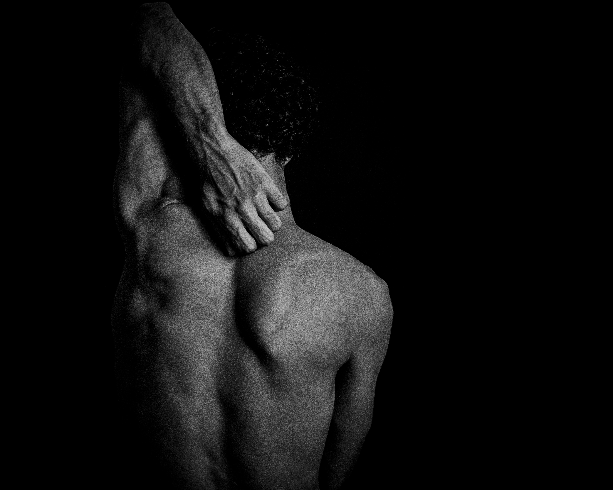

Douleurs musculaires au bureau : comprendre et prévenir avec
l’ostéopathie
Les douleurs musculaires au bureau font partie des
troubles musculo-squelettiques (TMS) les plus
fréquents. Travail sur écran, posture prolongée et stress
sollicitent fortement la nuque, les
épaules, le dos et les
poignets. Découvrez comment les comprendre et les
prévenir grâce à l’ ostéopathie.

Les douleurs musculaires liées au travail de bureau
Les TMS touchent principalement les
tissus mous, notamment les
muscles et les tendons. Lors d’un
travail prolongé sur écran, ce sont surtout la
nuque, les épaules, la
région lombaire, les poignets et
les mains qui sont sollicités.
Lorsque les muscles sont fatigués,
surchargés ou légèrement lésés,
ils expriment une douleur, signal d’alerte pour
l’organisme.
Douleurs immédiates ou retardées : pourquoi ?
Les douleurs musculaires peuvent apparaître
pendant l’effort ou dans un délai de
24 à 48 heures, liées aux micro-lésions ou à
l’accumulation de déchets dans les muscles.
Ces symptômes traduisent souvent un
état de fatigue musculaire et une récupération
insuffisante.
Les différents types de douleurs musculaires
Courbatures : inflammation naturelle du muscle,
liée à l’élimination des déchets et à la réparation des fibres
musculaires.
Crampes : contractions soudaines d’un muscle,
parfois indépendantes de l’activité physique.
Élongation : étirement excessif du muscle avec
micro-déchirures de fibres.
Déchirure musculaire : rupture partielle des
fibres, nécessitant repos et arrêt de l’effort.
Contracture : muscle douloureux et contracté en
permanence, typique des TMS.
Comment prévenir les douleurs musculaires au bureau ?
Bien s’hydrater : préserver l’élasticité
musculaire et limiter les crampes.
Alimentation équilibrée : protéines, fruits et
légumes soutiennent la récupération.
Bien dormir : le sommeil favorise la récupération
et limite les blessures.
Activité physique adaptée : régulière et
progressive pour réduire le stress et les tensions.
Étirements réguliers : doux et non douloureux
pour améliorer la mobilité et réduire les tensions.
Ostéopathie et douleurs musculaires liées au travail
L’ostéopathie permet de prendre en charge les
douleurs musculaires au bureau en agissant sur les
déséquilibres posturaux, les
tensions musculaires et la
mobilité articulaire.
En tant qu’ostéopathe à Bruges, je vous accompagne
pour soulager vos douleurs, améliorer votre posture et prévenir la
récidive des TMS.